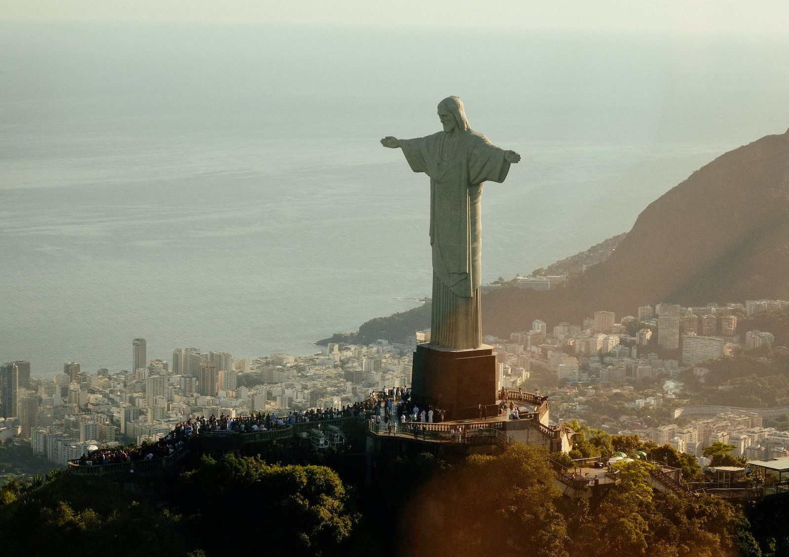
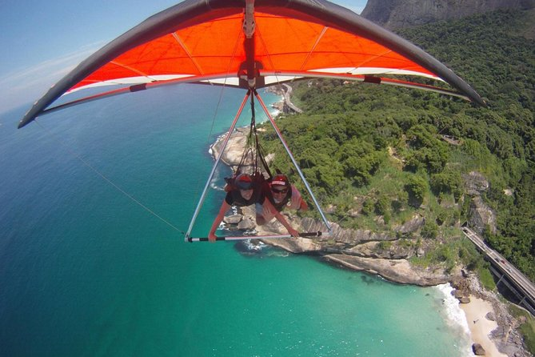
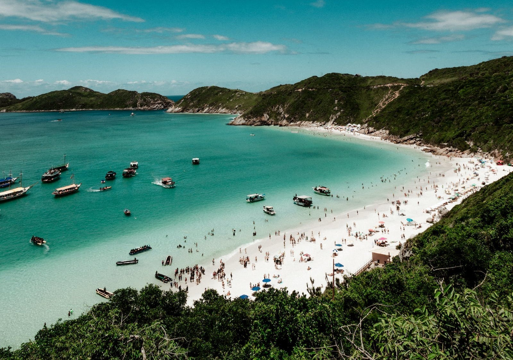
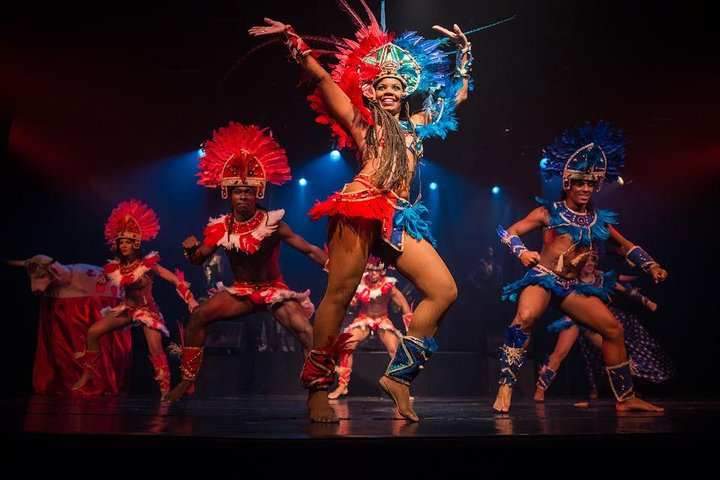

La ciudad de Río de Janeiro se encuentra dividido en cuatro zonas muy diferentes que son la zona Sur, la zona Norte, la zona Oeste y la zona Centro. Para el turismo son interesantes únicamente las zonas Centro y Sur, donde podemos encontrar grandes edificios históricos, atracciones culturales como museos, colecciones de arte, iglesias con una arquitectura increíble, etc. Por otro lado, nos encontramos con hermosos paisajes rodeados de montañas, mar y playas que son un sueño; y a la noche tendrás decenas de bares y clubes nocturnos para recorrer.
Sus famosas playas como Ipanema, Copacabana o Leblon; su geografía montañosa al pie del océano Atlántico; su entorno natural rodeado por el Parque Nacional da Tijuca; su grandioso carnaval y su fascinante historia, son algunos de los motivos que hacen de esta ciudad ser llamada de “Cidade Maravilhosa”.
¿COMO LLEGAR?
Se puede llegar a Rio de Janeiro por avion, por tierra o por Mar.
Hay dos formas de llegar a Rio. Por carretera, la manera más práctica y segura de viajar es a través de buses. Próxima al Centro de la ciudad está ubicada la “Rodoviaria” (estación de buses) Novo Rio, que te conectará con muchísimos destinos dentro de Brasil y para los que no son aficionados a volar, también algunos destinos internacionales dentro de Sudamérica.
En términos de clima, es mejor viajar durante los meses de octubre, noviembre y principios de diciembre: los días son bastante calurosos y el ambiente es festivo en preparación para el carnaval.
¿QUE HACER?
Cristo Redentor
Como una de las Siete Maravillas del Mundo y la atracción más emblemática de Río de Janeiro, la estatua del Cristo Redentor atrae largas líneas. No pierda el tiempo esperando, ahorre tiempo con este boleto sin colas que le permite abordar el próximo tren disponible hacia Cristo Redentor, que reina sobre la ciudad desde la cumbre de Corcovado. Su boleto de regreso es válido en cualquier tren, así que pase todo el tiempo que quiera en la cima, disfrutando de las vistas panorámicas de Río y capturando fotografías bajo los brazos extendidos de Cristo.
Ala delta o Parapente en Río
Vea Río de Janeiro desde un ángulo completamente nuevo durante un recorrido privado que ofrece la opción de volar en ala delta o parapente sobre la Ciudad Eterna. No es necesario tener experiencia previa en estos deportes extremos para disfrutar de este tour, que le permite escapar de las multitudes en tierra y disfrutar de vistas inigualables de las principales atracciones como la playa de Copacabana, el Cristo Redentor y el Pan de Azúcar.
Arraial do Cabo
Cambia el bullicio de Río de Janeiro por la belleza tropical de Arraial do Cabo, conocido por los lugareños como el Caribe brasileño, durante el recorrido le permite sentarse y disfrutar del paisaje, mientras que las paradas para nadar en aguas cristalinas aumentan sus posibilidades de observar la vida silvestre.
Ginga Tropical
Salga por una noche en la ciudad con este boleto de admisión para ver el espectáculo en vivo Ginga Tropical en el teatro Leblon. Este espectáculo de 1.5 horas está en su quinto año consecutivo y le brinda un recorrido interactivo de la cultura brasileña a través del baile, la música y la actuación en vivo. Mira como los artistas combinan frevo, capoeira y otros métodos de entretenimiento. Al final del programa, incluso puedes unirte cuando el reparto invita a la audiencia a la samba con ellos en un final inspirado en el Carnaval.
___________________________________________________________________
¿DONDE ALOJARSE?
Hilton Rio de Janeiro Copacabana
Hilton Rio de Janeiro Copacabana
Av. Atlântica, 1020 - Copacabana, Rio de Janeiro - RJ, 22010-000, Brasil
Tel: +55 21 3501-8000
★ ★ ★ ★ ★
Reserva YA
Hotel Atlântico Business
Hotel Atlântico Business
R. Sen. Dantas, 25 - Centro, Rio de Janeiro - RJ, 20031-202, Brasil
Tel: +55 21 3626-7000
★ ★ ★ ★
Reserva YA
Hotel Atlântico Tower
Hotel Atlântico Tower
R. Pedro I, 19 - Centro, Rio de Janeiro - RJ, 20060-050, Brasil
Tel: +55 21 2042-2730
★ ★ ★
Reserva YA
___________________________________________________________________
¿DONDE COMER?
Casa da Feijoada
Casa da Feijoada
R. Prudente de Morais, 10B - Ipanema, Rio de Janeiro - RJ, 22420-040, Brasil
Tel: +55 21 2247-2776
★ ★ ★ ★
+Info
Plage Café
Plage Café
R. Jardim Botânico, 414 - Parque Lage, Rio de Janeiro - RJ, 22461-000, Brasil
Tel: +55 21 2535 7336
★ ★ ★ ★
+Info
Fogo de Chão Botafogo
Fogo de Chão Botafogo
Av. Reporter Nestor Moreira, s/n - Botafogo, Rio de Janeiro - RJ, 22290-210, Brasil
Tel: +55 21 2542-1545
★ ★ ★ ★ ★
+Info